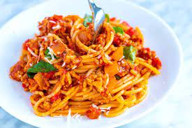

New Spaghetti Recipe

Description
Flights are expense: so why travel to Italy to eat some of the best food when you can bring Italy to your kitchen.
This new spaghetti recipe will transport your tastebuds to the old country, and immerse you in the brilliance
of Italian cuisine.
it starts off like this:
ingredients
- 8 ounces (225g) spaghetti
- 2 tablespoons olive oil
- 3 cloves garlic, minced
- 1 pound (450g) ground beef or ground turkey
- 1 jar (about 24 ounces/680g) marinara sauce
- 1 teaspoon dried oregano
- 1 teaspoon dried basil
- Salt and pepper to taste
- Grated Parmesan cheese (optional)
- Fresh basil or parsley for garnish (optional)
steps
- Cook the spaghetti according to the package instructions until al dente. Drain and set aside.
- In a large skillet, heat olive oil over medium heat. Add minced garlic and sauté until fragrant, but not browned.
- Add the ground beef or turkey to the skillet and cook until browned, breaking it apart with a spoon as it cooks.
- Pour in the marinara sauce and add dried oregano, dried basil, salt, and pepper. Stir to combine.
- Simmer the sauce for about 15-20 minutes, allowing the flavors to meld and the sauce to thicken.
- Add the cooked spaghetti to the skillet with the meat sauce and toss to coat the pasta in the sauce.
- Serve the spaghetti with meat sauce in individual plates or bowls. If desired, sprinkle with grated Parmesan cheese and garnish with fresh basil or parsley.